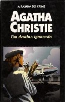

Um Destino Ignorado
Destination Unknown
Um a um, os maiores gênios da ciência somem misteriosamente. O último é Thomas Betterton, um jovem pesquisador, responsável pela descoberta de um novo processo de fissão nuclear. Intrigada com o caso, a Scotland Yard convoca o agente Jessop para investigar a motivação por trás dos desaparecimentos. Mas isso não seria suficiente. O serviço secreto inglês também recorre à bela Hilary Craven, enviada para uma missão suicida: assumir a identidade da esposa de Betterton, partindo para um destino ignorado...